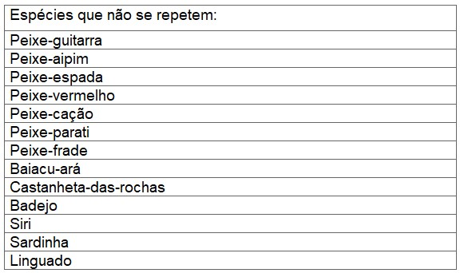
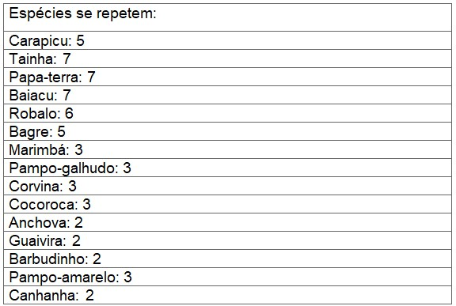
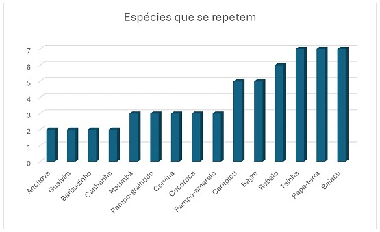
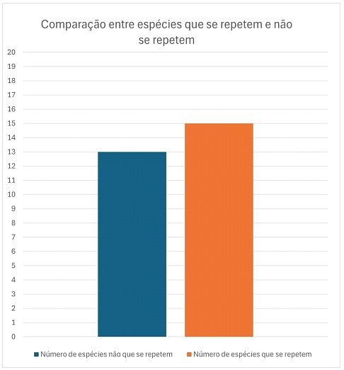
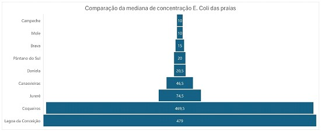
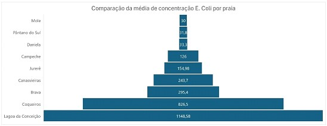
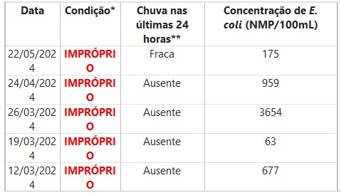
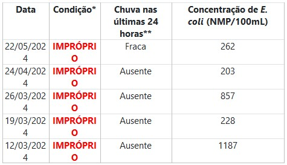

Dados gerais, correlações, desvio de padrão e gráficos
Este tópico contém dados gerados a partir da análise dos dados dos tópicos anteriores :

Total: 13

Total: 15
Gráficos
O gráfico abaixo mostra quais espécies se repetem e quantas vezes elas se repetem:

O gráfico abaixo faz uma comparação entre o número de espécies que se repetem e as que não se repetem:

O gráfico abaixo faz a comparação entre o total de pontos impróprios e próprios de banho de cada praia:
O gráfico abaixo faz a comparação da mediana de concentração da mediana de concentração E. Coli das praias:

O gráfico abaixo faz a comparação das médias de concentração de E. Coli de cada praia:

Valor extremo em Coqueiros: Coqueiros apresenta apenas dois pontos de coleta, porém todos os pontos são 100% impróprios, fugindo do padrão encontrado em outras praias.
COQUEIROS PRIMEIRO PONTO (PRAIA DO MEIO)

COQUEIROS SEGUNDO PONTO (PRAIA DA SAUDADE)

Desvio de padrão na praia Brava: A praia Brava apresenta 4 pontos de coleta, sendo eles 3 próprios para banho e 1 completamente impróprio para banho.
.png)